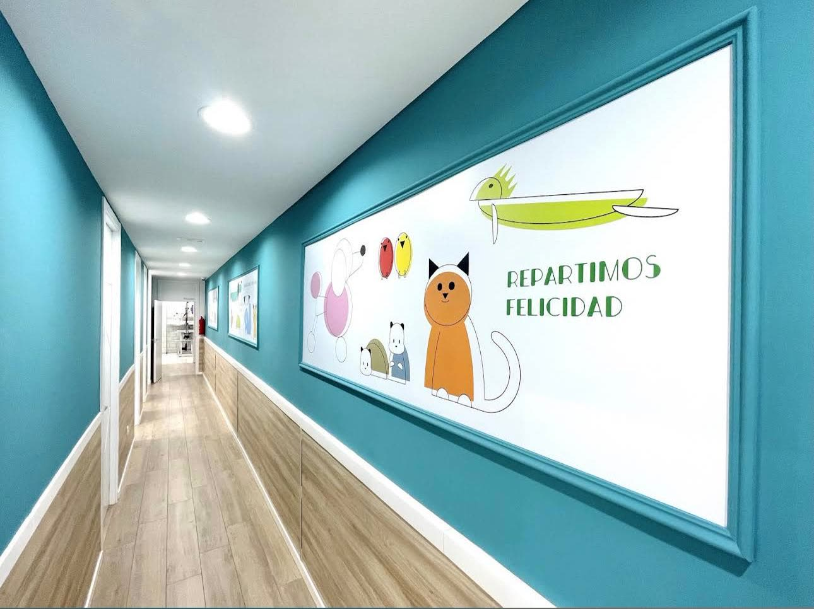
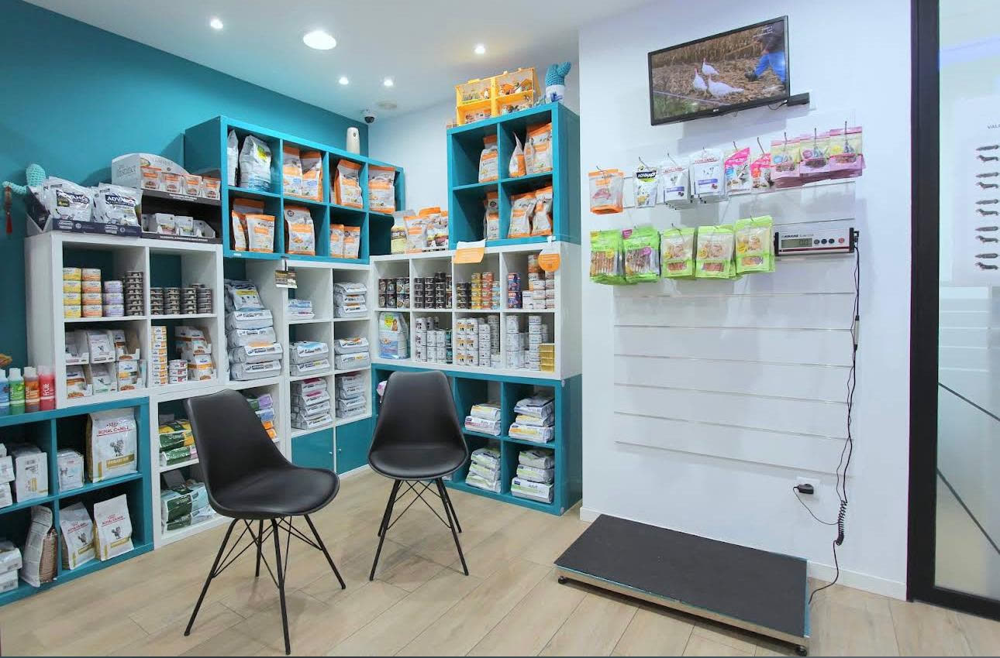
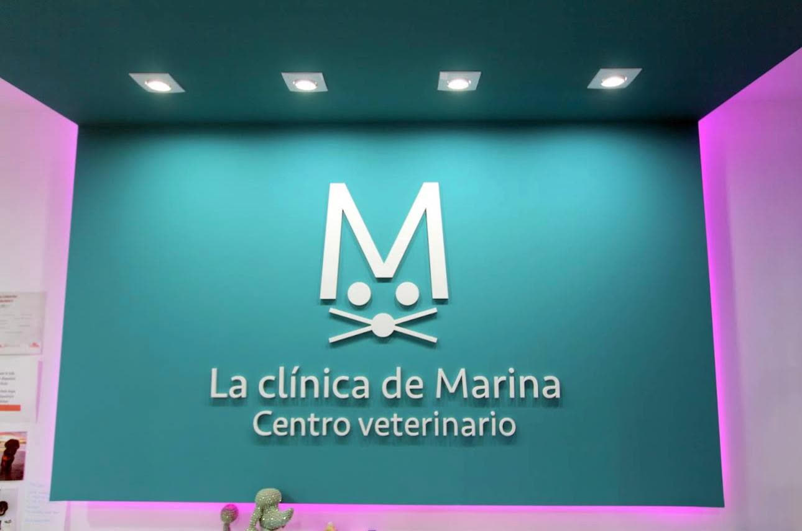

“Tengo una perrita de 10 meses, desde los 3 meses ha tenido varios problemas, uno de ellos fue fractura en la cola y no ha podido tener mejores veterinarias, hoy en día tiene la cola perfecta. Le tratan siempre con mucho amor. No se me ocurre llevarla a otro sitio.”
Centro veterinario · Benidorm
La Clínica de Marina.
Perros, gatos y exóticos, en el centro de Benidorm. Diagnóstico, cirugía y hospitalización en la propia clínica, y una veterinaria que se sabe el nombre de tu perro.
4,5 en Google · 183 reseñasUna clínica de barrio con los medios dentro: radiografía digital, ecografía, análisis, quirófano y hospitalización en la calle Marqués de Comillas. Y una sala de espera solo para gatos.
Lo que hacemos
De la primera vacuna a la cirugía.
Marina y su equipo
Se nota que le gustan todos.
Marina, veterinaria colegiada, atiende en el centro de Benidorm con su equipo. Lo que más repiten sus clientes en Google no es la técnica, aunque la hay: es el trato. Que explican, que siguen el caso y que tratan al animal como si fuera suyo.
Algunos llevan ocho años trayendo a los suyos. Otros llegaron de vacaciones, con un susto, y volvieron al año siguiente.
Pedir cita
Vacunas y microchip
La cartilla, al día.
Primeras vacunas del cachorro o del gatito, rabia, microchip obligatorio y recordatorios anuales. Cada visita queda anotada y se avisa de la siguiente antes de que toque.
Si viajas con tu animal, aquí se preparan la cartilla y el pasaporte con lo que exige el destino.
Cita para vacunasCartilla · cachorroOrientativo
6-8semanas
Primera vacunaParvovirus y moquillo
Hecho12semanas
Segunda vacuna y microchipIdentificación obligatoria
Hecho16semanas
RabiaObligatoria en la Comunidad Valenciana
Próxima1año
Recordatorio anualRevisión y refuerzo
PendienteCalendario orientativo. Las pautas exactas las fija la veterinaria según el animal.
Diagnóstico y cirugía
Los medios, en la propia clínica.
Radiografía digital, ecografía y análisis clínicos sin salir de la consulta, para tener la respuesta el mismo día. Cirugía general y traumatología con hospitalización en el centro, y un teléfono de urgencias remitidas para cuando no es horario.
Llamar a la clínicaEn la clínicaMarqués de Comillas, 4
Radiografía digitalSala de rayos propia
EcografíaDiagnóstico por imagen en consulta
Análisis clínicosResultados sin esperar al laboratorio externo
Cirugía general y traumatologíaQuirófano en el centro
HospitalizaciónIngreso y seguimiento en la clínica
Urgencias remitidas fuera de horario: 966 860 669.
Peluquería y tienda
Baño, corte y la comida que le toca.
Peluquería canina en la propia clínica, con bañera y mesa de secado. Y una tienda con alimentación de veterinaria y complementos, elegidos para cada edad y cada problema, no por catálogo.
Cita de peluquería
Servicios
Todo, en un mismo sitio.
Pulsa el que te interese y escríbenos.
01
Consultas generales
Revisión, diagnóstico y tratamiento.
02
Vacunas y microchip
Cartilla, pasaporte y recordatorios.
03
Especialidades clínicas
Medicina interna e inmunología.
04
Diagnóstico por imagen
Radiografía digital y ecografía.
05
Análisis clínicos
Sangre y orina, en la clínica.
06
Cirugía y traumatología
Con hospitalización en el centro.
07
Exóticos
Conejos, aves, reptiles y roedores.
08
Peluquería canina
Baño, corte y secado.
09
Tienda especializada
Alimentación veterinaria y complementos.

Benidorm
En la calle Marqués de Comillas, 4.
En pleno centro de Benidorm, de lunes a viernes de 8:00 a 16:00. Con cada consulta, una hora de parking.
Cómo llegarLo que dicen sus clientes
183 reseñas en Google.
Una nota media de 4,5. Son opiniones públicas de clientes con nombre y apellidos; estas son tres de ellas.
“Muy profesionales y simpáticas. Llevamos a la perrita de mi hija desde hace 2 años en que nos cambiamos de clínica, siempre nos han atendido puntualmente, con un trato fantástico y gran profesionalidad, desde el puesto de recepción a todo el equipo veterinario. Gracias por vuestra atención.”
“Agradecer enormemente el gran seguimiento que le habeis hecho a Kay, y el haberlo tratado con tanto amor y delicadeza hasta su último suspiro. De verdad gracias de corazon. Grandes profesionales, y un trato muy cercano y muy empáticas.”
Visítanos
Horario y contacto.
Horario
| Lunes | 8:00–16:00 |
| Martes | 8:00–16:00 |
| Miércoles | 8:00–16:00 |
| Jueves | 8:00–16:00 |
| Viernes | 8:00–16:00 |
| Sábado | Cerrado |
| Domingo | Cerrado |
Contacto
- C/ del Marqués de Comillas, 4
03501 Benidorm (Alicante) - 966 80 02 29 · 626 22 04 34
- Pedir cita por WhatsApp
- Lunes a viernes, 8:00–16:00. Se recomienda pedir cita. Una hora de parking con cada consulta.
El mapa es de Google y usa sus cookies. Se carga solo si lo pides.
Primera visita
Cuéntanos qué le pasa.
Escríbenos por WhatsApp con el nombre de tu animal y qué le ocurre, o llámanos. Te damos hora lo antes posible.